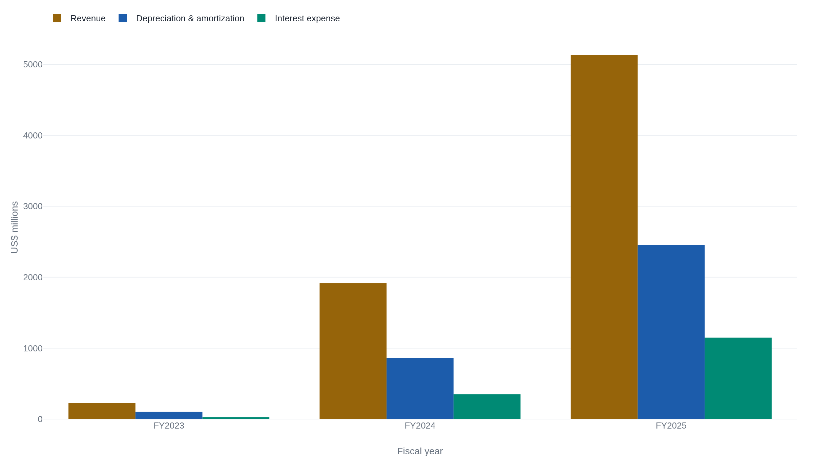
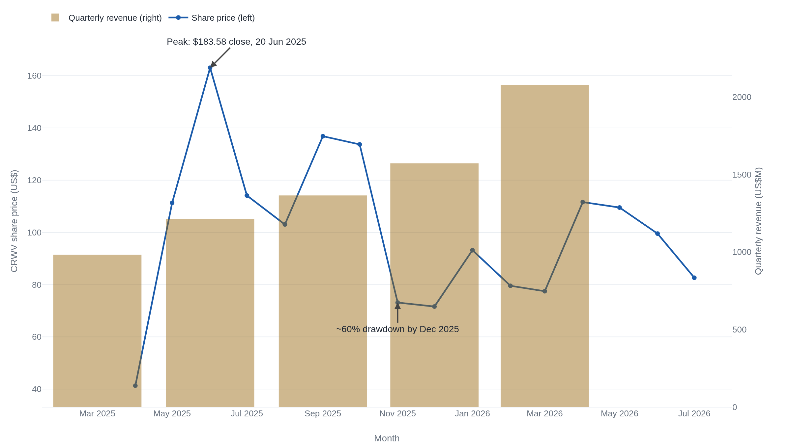

CoreWeave's depreciation and interest already consume most of its revenue
Its GPUs depreciate over six years while the debt that bought them is paid in cash today, so a record $98.8 billion order book has to outrun both.
The number the accountants get to choose
In 2025 CoreWeave spent $10.3 billion buying computing hardware, mostly Nvidia GPUs, and earned $5.1 billion renting it out.1 Everything about the business lives in that gap, and how the company reports it turns on a single accounting choice: it spreads the cost of each GPU across six years of straight-line depreciation.1 That choice decides how much of a rented GPU's price hits the income statement this year and how much waits. It also encodes a bet, that a chip bought today is still earning rent in 2031.
The bet is already expensive. In the first quarter of 2026, depreciation and amortization of $1.15 billion and interest expense of $427 million together came to 76% of the quarter's $2.08 billion in revenue, before a dollar of payroll, sales, or overhead.2 A capital-intensive rental business lives on one relationship: whether the revenue it can put under contract outlasts both the hardware it is booked against and the debt that bought the hardware. CoreWeave is the clearest case in the market of that relationship under strain, and its own filings are enough to read it.
How a bought GPU becomes a booked cost
Depreciation is the accounting recognition of cash a company already spent. CoreWeave pays Nvidia for a rack of GPUs, records the hardware as property and equipment on the balance sheet, then charges a slice of its cost against revenue each year until the asset is written down to zero. The slice is the depreciation expense. The size of the slice depends entirely on how many years the company assigns to the asset. CoreWeave assigns six years to its computing equipment, and it got there by revising its own estimate upward.1
"Effective January 1, 2023, the Company changed its estimate of the useful life for its computing equipment utilized in data centers from five to six years, reflecting continuous advancements in hardware performance, software optimization, and data center design improvements."1 CoreWeave FY2025 Form 10-K, property and equipment policy
A longer life spreads the same cost over more years, so it lowers the annual depreciation charge and raises reported profit in the near term. The direction matters because the charge is large and growing. In 2023 depreciation and amortization was $103 million against $229 million of revenue. By 2024 it was $863 million against $1.9 billion, and by 2025 it reached $2.45 billion against $5.1 billion.13 Depreciation has held near half of every dollar of revenue as the company scaled, and interest expense has climbed behind it.

The six-year life is a forecast, not a fact. It says the average GPU CoreWeave buys will still be worth renting, at a price that covers its share of the cost, most of the way to 2031. If that holds, the depreciation schedule is honest and the near-term losses are the ordinary shape of a business investing ahead of its revenue. If it does not hold, the schedule is charging too little each year and the reported loss understates the real one.
The clock the schedule assumes
CoreWeave's case for six years is on the record: hardware performance, software optimization, and data-center design keep improving, and a GPU can be redeployed to cheaper workloads as newer chips take the frontier. The company also names the risk plainly, warning that any "inability to redeploy components of our existing infrastructure to extend past their contracted life could significantly affect our business."1 Redeployment is the load the six-year number carries. A GPU that can be rented to someone, somewhere, for six years is worth what the schedule says. One that is idle in year four is not.
The contrary reading starts with how these chips are used. Independent analysis of the neocloud model notes that a GPU run at 80 to 100% of capacity, the way a rented AI accelerator earns its keep, "degrades at a rate that a machine running at 20 to 30 per cent does not." It puts the effective life closer to three to five years.4 The gap is not academic. At roughly $30,000 for an Nvidia H100, a seven-year schedule books about $4,300 of depreciation per GPU a year; a three-year schedule books about $10,000.4 Shorten the life and the annual charge more than doubles, which is the difference between a thin reported profit and a widening loss.
The pressure runs one way. Nvidia has moved its frontier roughly once a year, from Hopper to Blackwell to the next generation, and each step lowers the rent an older chip can command. Depreciation booked over six years assumes a price for year-five compute that a faster replacement may already have undercut. The schedule is a claim about the future price of a rapidly obsolescing asset, and the company writing it has every reason to prefer the longer number.
A loss on paper, cash out the door
Two facts here seem to contradict each other. CoreWeave lost $1.17 billion in 2025, yet its operations generated $3.06 billion of cash the same year.1 Both are true because depreciation is a non-cash charge: the $2.45 billion the income statement subtracted was cash spent in earlier periods, added back to get to operating cash flow. A neocloud will almost always show positive operating cash flow for exactly this reason, and the number says less about durability than it first appears.
What the operating cash flow does not cover is the next fleet. Capital spending was $10.3 billion in 2025 and $7.7 billion in the first quarter of 2026 alone, several times what operations threw off.12 The difference is borrowed. Total debt reached $24.9 billion by the end of the first quarter, with another $10.1 billion of operating lease obligations behind it, against $4.8 billion of shareholders' equity, a balance sheet geared above five to one.2 And unlike depreciation, the debt is cash: interest expense was $1.15 billion in 2025 and $427 million in the first quarter, paid in real money whatever the schedule says the GPUs are worth.12
The equity beneath all this is young. CoreWeave went public in March 2025 at $40 a share, raising about $1.5 billion.5 The debt has been cheaper than the youth of the business might suggest. Lenders priced its 2026 borrowing below 6%, down from around 15% in 2023, largely on the strength of its contracts with Microsoft and Meta rather than its current cash generation. Aswath Damodaran, who has studied the credit terms, put the objection bluntly: "You can't make interest payments with potential and promise. You got to make it with cash flows."6 Whether the offtake agreements justify the spread is the same durability question in a different seat: the lender is betting on the contracts, and the contracts are betting on the chips.
What $98.8 billion in contracts is worth
The bull case is a backlog. CoreWeave reported $98.8 billion of remaining performance obligations at the end of the first quarter of 2026, up from $60.7 billion at year-end and $15.1 billion a year before that, with a weighted-average committed-contract duration of about five years.21 Five years of contracted revenue is close to the six-year depreciation life. That proximity is the strongest thing that can be said for the schedule. If a GPU is under contract for most of its booked life, the price it earns is locked, not exposed to the falling spot rate for older compute.
The weakness is who the counterparties are. Microsoft alone was about 67% of 2025 revenue, and the company's top customers have never been more than a handful: 77% from the top two in 2024, 73% from the top three in 2023.1 The recent growth in the backlog is a shift from one anchor tenant to three. CoreWeave signed OpenAI to agreements worth up to $11.9 billion through 2030 and a further $6.5 billion through 2031, and now lists OpenAI, Microsoft, and Meta as its significant customers.17 A backlog concentrated in three names is only as durable as those three demand curves. If a customer builds its own capacity or renegotiates, a large piece of the $98.8 billion revalues at once.
The market has been pricing and repricing that uncertainty in public. The shares peaked at a $183.58 close in June 2025, more than $140 above the IPO price twelve weeks earlier, then fell roughly 60% into December before recovering to $82.64 by July 2026, a market value near $45 billion.89 Underneath the swings, revenue rose in every quarter across the same window. The steady climb and the round trip describe one uncertainty from two sides: the operating business is compounding, and the price is the market repricing, quarter to quarter, whether the contracted revenue will outlast the schedule and the debt.

Reading the next filing
Neither case is settled by today's numbers, and the honest position is to know what would settle them. Four lines in the coming filings do most of the work. The first is depreciation as a share of revenue: it has climbed from 45% to 55% across the last three years and the last quarter, and the question is whether scale finally bends it down or it keeps rising.12 The second is the useful-life estimate itself. A company that shortened its GPU life back toward five years, or took an impairment on idle hardware, would be conceding the bear's point in its own hand.
The third is interest coverage. As debt compounds, the test is whether operating income, not operating cash flow, begins to cover the interest bill, or whether each new tranche of borrowing has to be serviced by the next. The fourth is conversion and concentration: how much of the $98.8 billion backlog turns into collected cash on schedule, and whether the customer list past Microsoft, OpenAI, and Meta ever lengthens. A neocloud is a wager that contracted revenue outruns a depreciating asset and the debt that financed it. CoreWeave has written the wager larger than anyone, and it has left, in its own filings, the four numbers that will show whether it is winning.
Sources
- U.S. SEC / CoreWeave, Inc. · Form 10-K for fiscal year 2025 (filed 2026-03-02)
- U.S. SEC / CoreWeave, Inc. · Form 10-Q for the quarter ended 2026-03-31 (filed 2026-05-08)
- U.S. SEC EDGAR · XBRL company facts, CoreWeave, Inc. (CIK 0001769628)
- ElectronEconomics · "The depreciation clock CoreWeave's bulls aren't running" (2026-05-06)
- CoreWeave, Inc. · "CoreWeave Announces Pricing of Initial Public Offering" (2025-03-27)
- Benzinga · "CoreWeave's Credit Approach Gets A Pep Talk From The 'Dean Of Valuation'" (2026-06-26), reporting Aswath Damodaran
- U.S. SEC / CoreWeave, Inc. · Form S-1 registration statement (EDGAR)
- stockanalysis.com · CRWV historical price data (public monthly close series, accessed 2026-07-22)
- stockanalysis.com · CoreWeave (CRWV) overview: all-time-high close, latest price, market capitalization (accessed 2026-07-22)